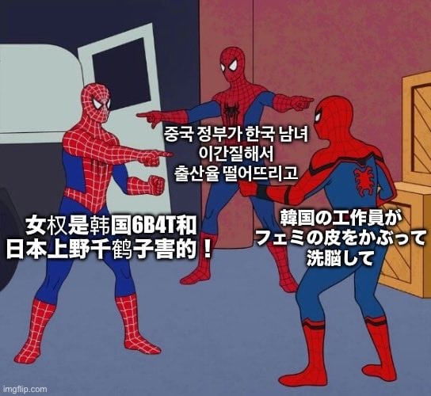

서로가 서로를 원인으로 지목중

서로가 서로를 원인으로 지목중
선동질에 넘어간게 한국페미라기엔
일베가먼저 보슬아치, 김치녀 거리면서 일방적으로 한녀패고 그 이후에 메르스사건때 계기가되어 래디컬페미 생긴건데.. ?
언제부터 일베가 주류였지? 일베말대로 하는게 있음? 일베 옹호하는 사람들도 많고? 현실정책에 영향을 끼치고 그랬었나? 숙대 트젠입학거부 같은 혐오짓하는걸 인권운동으로 포장해줬나?
일베가 먼저라는 것도 웃겨
일베만 그랬나? 아예 방송에서 대놓고 루저거렸는데
일방적으로 한녀팼다는건 틀린 말임
나무위키 보니까 일베가 2010년임
루저 발언이 2009년이고
방송에서 루저거린게 남자혐오야 ?
여자는 태어나지도못하고 낙태당했는데 ?
현실정책에 영향을 끼친건 정치인들이 페미옷을 입은 화짱조를 잘 이용해먹은거지 그리고 그 정치인들은 남자고.
니 현실 주변에 페미있어? 오로지 커뮤로만 알면서 왜 페미한테 화가나있는거야 ㅋㅋ본질을봐
그리고 니가 지금 하는건 페미욕이 아니라 한녀전체를 싸잡아욕하고있잖아. 너 일베야? 아니잖아.
이 댓글중 한녀전체 싸잡은게 있다고? ㅋㅋ
강남역, 혜화역 시위 나왔던 페미들은 없는 사람임?
글고 그 정치인들은 그냥 남자가 아니라 스윗틀딱룸빵남들이지 세대문제를 젠더갈등으로 만든 쓰레기들임
왜 저런애랑 대화를 시도하고 있어...대화는 사람이랑하는거임
니가 다 틀림
방송에서 180이하 루저거린건 남자혐오 맞잖아. 당당하게 남혐하는건 지금이나 그때나 있었음. 지금은 집단화됐지만
군대가서 사람죽이는 기술배워온다하면 여자쪽은 맞다맞다 해준것도 오래됐는데
가입일 렙 꼬라지 봐라 ㅋㅋ
방송에서 루저 거린건 남자혐오 맞음
여자는 태어나지도 못하고 낙태당했다? 제대로 증거가 있나?
정치인들은 페미를 이용한게 맞고 그걸 남자라고 몰아가면 안되지 여가부는 그럼?
주변에 페미는 이미 시위하고 동덕여대 락카칠한 애들이 다 보여주는거 같고
한녀전체를 욕한적이 없지 않나 다 페미욕이지 아 한녀는 페미다?이런거야?
님 여자인 건 알겠는데요. 열심히 사세요
진짜 찐으로 여자더라.. 처음엔 컨셉이거나 스윗남페미인줄 알았는데 진짜배기 순혈 페미였음
니 주변에 있어? 이게 제일 병신같고 한심한 말이다
일베메갈 그런걸 떠나서 세상사람 누구나 하나의 가면은 쓴채로 사회생활을 하는데 밑댓놈 말마따나 시위하던애들은 존재하지 않는사람이냐?
그리치면 세상에 욕할사람이 어디있음? 근처에없고 커뮤로만 봤는데?
각나라 수장들은 왜욕함? 커뮤나 뉴스로만 봤는데
주변에 북한인 있냐? 북한도 까지마라ㅇㅇ
니가 남자든 여자든 컨셉이든 아니든 그냥 컨셉이고, 난 어그로 끌린 병신이길 바란다. 그게 아니면 너무 비참할거같아
여성혐오면 중국 어쩌고 해도 모르겠는데 페미는 국산인데 ㅋㅋ
한국이미안하다 그러니 다 가져가라
일본처럼 초식남 유행해야 바뀜
지금 심각한 정도가 중국 > 한국 >>>> 일본인듯
중국페미는 정부차원에서 때려잡는 중임. 그저 결혼때 따지는게 많을뿐
음 그러게 페미라기보다는 표독함 정도가 저럴 듯
놀랍게도 이게 다 사실이라면?
근데 이제 가면 벗기면 다 한국여자인
시작은 중국 맞자너 페미 창시자가 애초에 간첩이었는데
아 로씨아인가 ㅎㅎ;
한국이 스포닝풀이잖아
일본이 먼저긴 했지 한국은 일본 마케이누 여성들보고 그렇게 안되려고 여성부 만들어서 승리했고
마케이누랑 페미니즘은 관계없다
남자조건 따지는 김치년질 하는건 페미가 아님
근데 한녀가 원인 맞지않나..
간첩이 조장했다고 한들 그 선동질에 넘어간건 한국페미고 그거 밀어준 정치권임 걔들도 다 간첩이 아닌 이상 변명이 안됨 ㅋㅋ